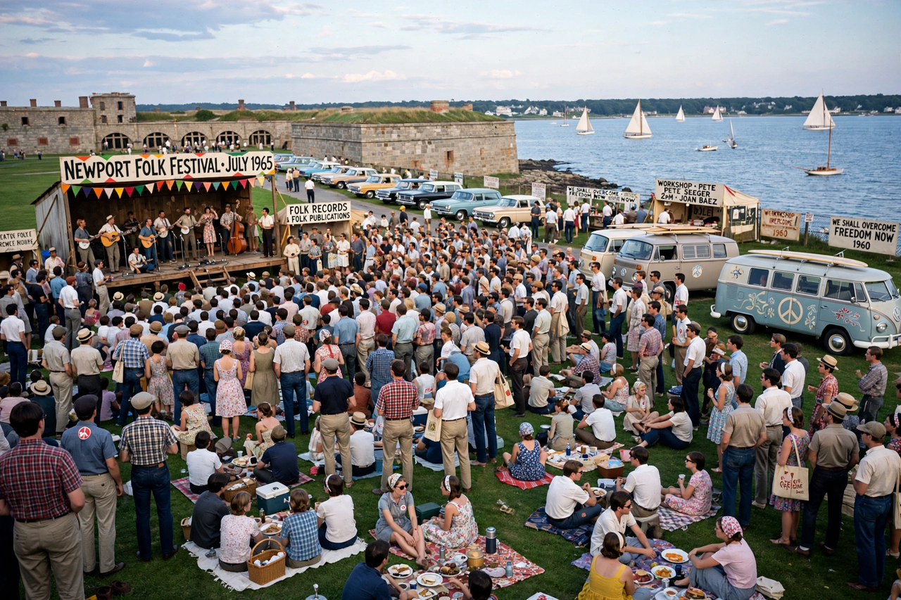

| Newport Folk Festival | |
| Genre | Folk, blues, country, Americana |
|---|---|
| Dates | Usually late July / early August |
| Location | Fort Adams State Park, Newport, Rhode Island, U.S. |
| Years active | 1959–1960, 1963–1969, 1985–present |
| Founded by | George Wein |

The Newport Folk Festival is an annual American folk-oriented music festival in Newport, Rhode Island, which began in 1959 as a counterpart to the Newport Jazz Festival. It is one of the oldest and most storied music festivals in the United States, closely identified with the folk revival of the 1960s.
The festival was founded by jazz impresario George Wein, with Theodore Bikel, Oscar Brand, Pete Seeger and Albert Grossman among its early board members. Its first edition in 1959 introduced a young Joan Baez to a national audience. After a two-year break, the festival returned in 1963, mixing veteran blues, country and gospel performers (many rediscovered through festival appearances, such as Mississippi John Hurt) with young revival stars.
The festival's most famous moment came on 25 July 1965, when Bob Dylan, the folk movement's brightest young songwriter, performed with members of the Paul Butterfield Blues Band using electric instruments. The set — including "Maggie's Farm" and "Like a Rolling Stone" — drew boos and outrage from parts of the audience in a long-debated incident, and became a symbol of folk music's transformation in the 1960s.
The festival lapsed between 1970 and 1984, returning in 1985 at Fort Adams State Park. It has since balanced folk heritage acts with contemporary artists, producing famous surprises including Joni Mitchell's unannounced "Joni Jam" set in 2022. Since 2008 it has been produced by Jay Sweet under George Wein's Festival Productions.